R-15 Round 3 — drawing vs built
Branch c5-r15-kor3-kod · built from drawing f37b459 (+ „Még n javaslat”) · local production build, PG 18, test AI ([MINTA] texts) · 2026-10-10. Left: the approved drawing; right: the built page, same width.
Probe on the built views: 10 / 12 green.
- 03 phone, 1 waiting post: 43 words (limit 40). Cause: the local test AI writes a 12-word first sentence (the card's maximum, „[MINTA] Posztszöveg a megadott forrásból: === A CÉG PROFILJA === …”); the drawing's headline has 5 words. The tiles add 4 words („Hírek Posztszöveg Képek Iránytű”). With a headline of 8 words or fewer the phone stays at or under 40. Open question for Csilla, not improvised.
- Data differs from the drawing where the test system differs: this local organisation has 1 waiting post and no „Még vár” rows, so the „Még n javaslat” link has nothing to fold here; the fold itself is covered by the unit test and the drawing.
- Deviation: the sysadmin-only switch „belépési kísérletek” is not on the drawing, so it has no icon (question for the next drawing round).
- Upload, 100 MB: a 101 MB PDF in „Minták, kézikönyv” → „A fájl túl nagy: legfeljebb 100 MB lehet.” / „Túl nagy: legfeljebb 100 MB.”; the type line says „legfeljebb 100 MB” (screens at the bottom).
03 Kezdőlap — tiles first (03bT)
desktop probe green · phone T5 43 szó görgetés nélkül (≤ 40)

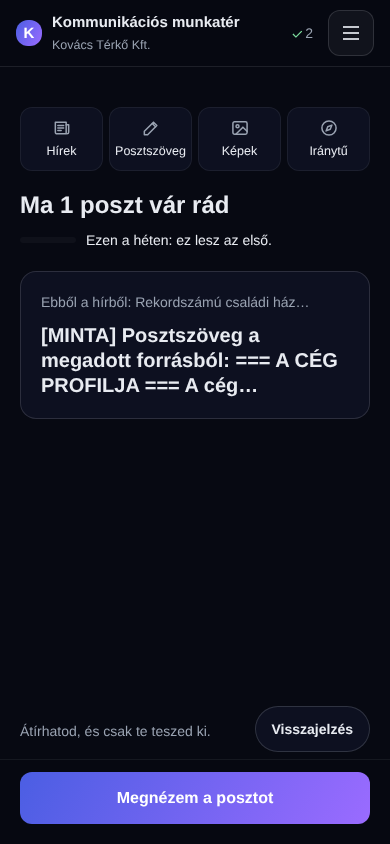

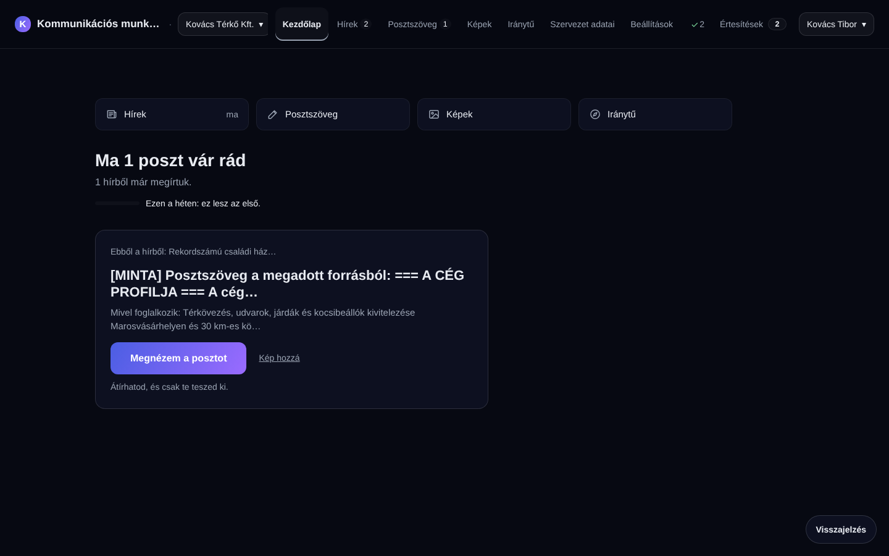
03 Kezdőlap — nothing waiting (03c2T)
desktop probe green · phone probe green

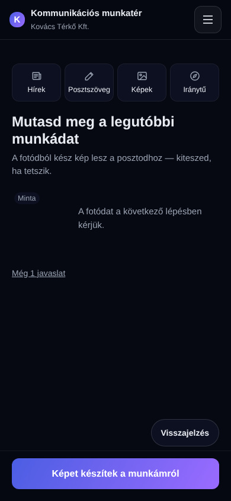
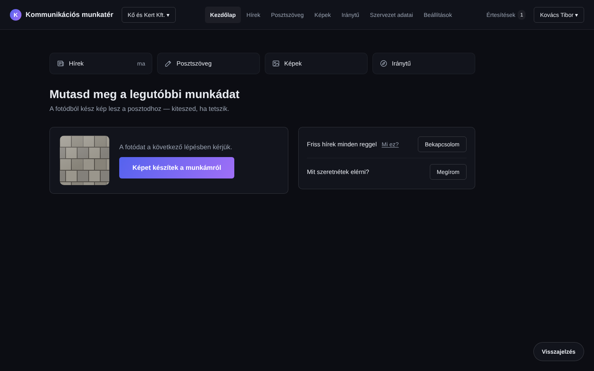
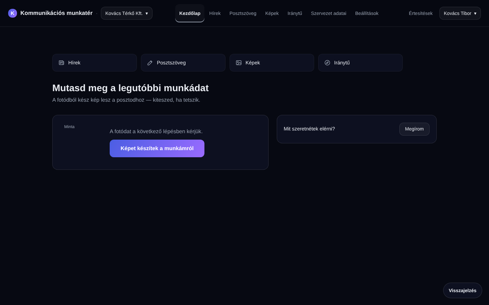
13 Beállítások — icons (13aI)
desktop probe green · phone probe green

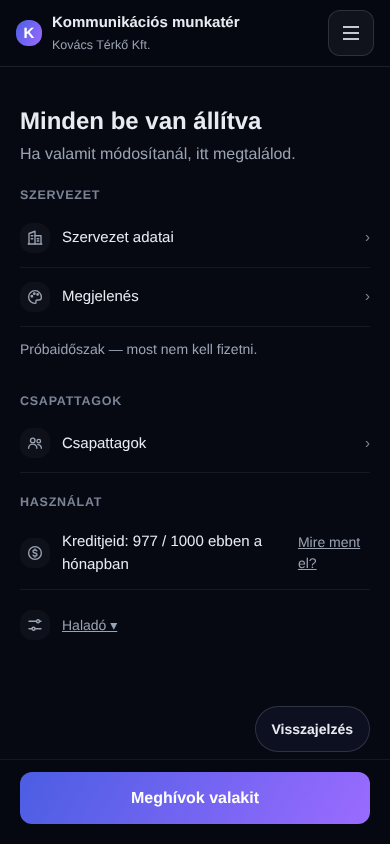

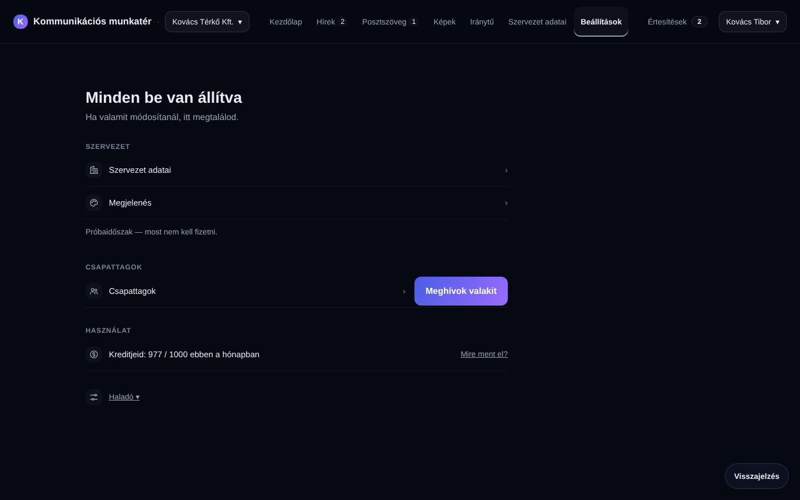
13 Beállítások — Haladó open (13bI)
desktop probe green · phone probe green
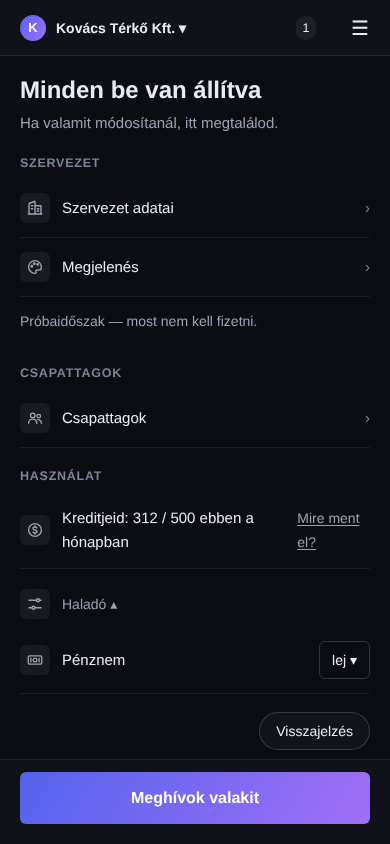
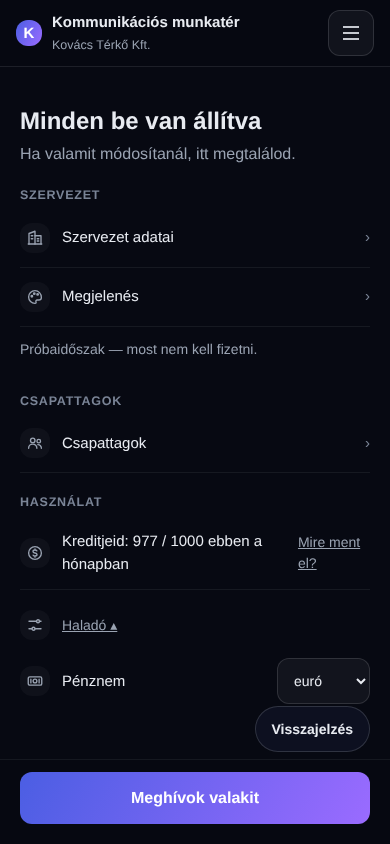

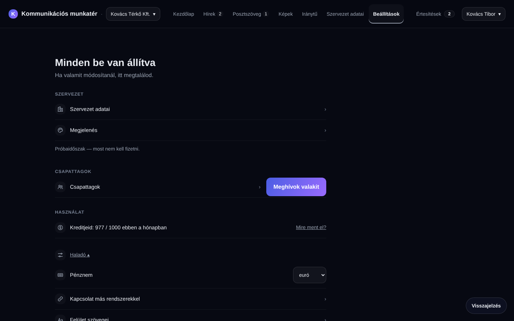
14 Értesítések — switches with icons (14cI)
desktop probe green · phone probe green
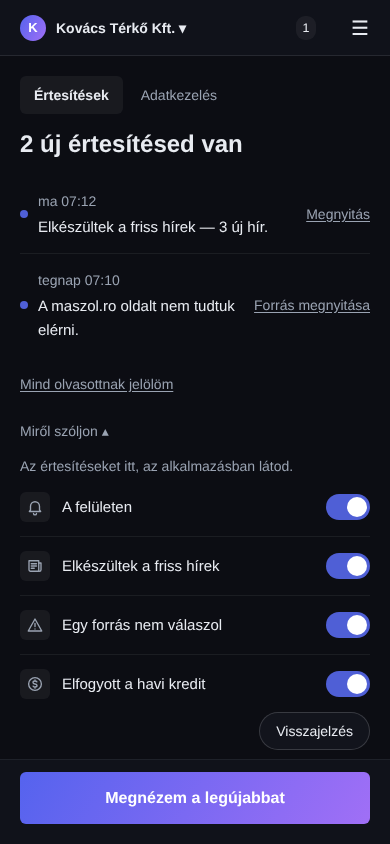
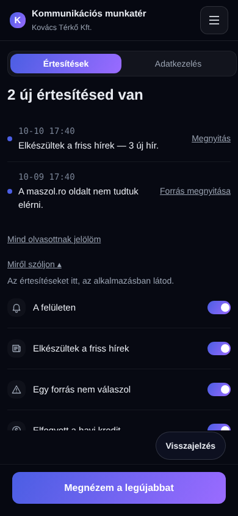

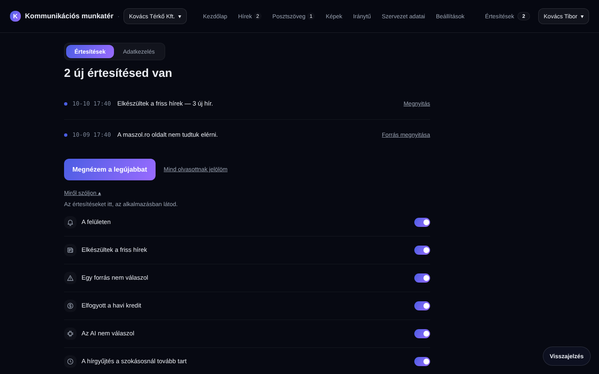
Arculati fájl 101 MB → friendly refusal (100 MB limit)
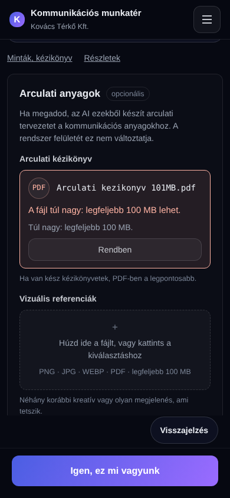
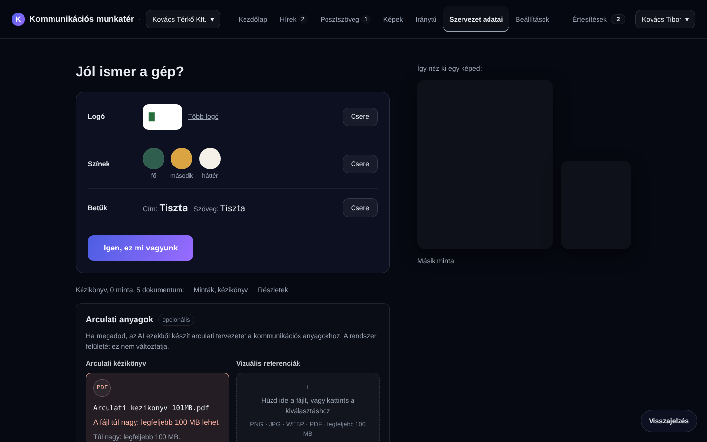